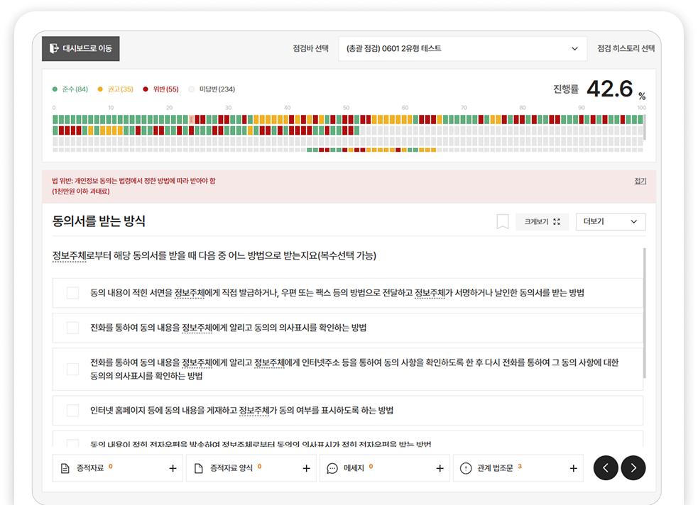
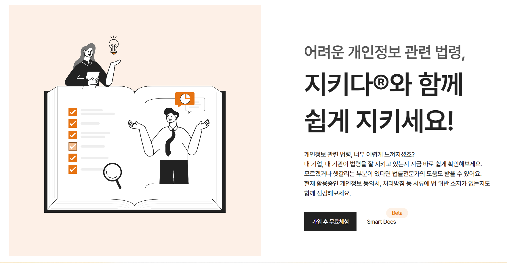
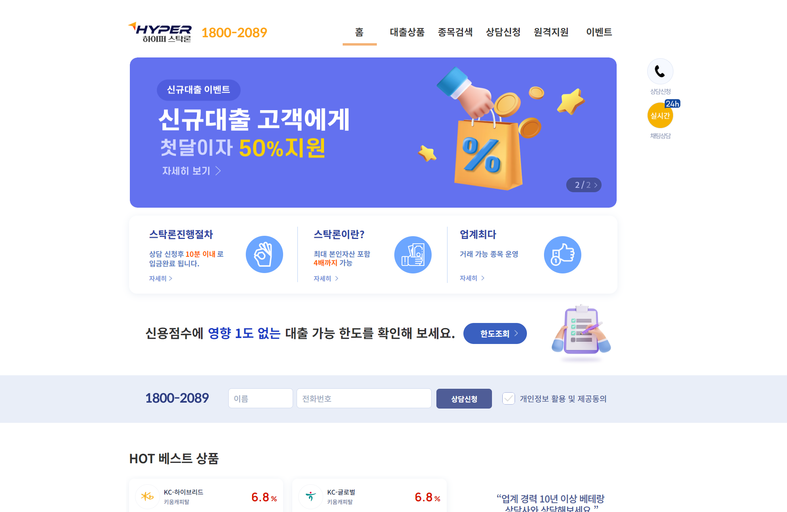

Frontend
React · Vue.js · JavaScript
HTML · CSS / SCSS · jQuery
FULL-STACK DEVELOPER · PORTFOLIO 2026
안녕하세요. 프론트엔드와 백엔드를 함께 경험하며 실제 서비스의 개발과 개선을 이어 온 개발자 김채림입니다. B2B SaaS를 중심으로 기획, 개발, QA, 배포와 운영을 경험했고 AI 기능 구현, 업무 자동화, 보안 개선까지 이어 왔습니다.
WHAT I FOCUS ON
사용자에게 필요한 기능을 이해하고, 유지보수하기 좋은 구조와 안정적인 서비스로 연결하는 일을 좋아합니다.
SELECTED WORK
실제 서비스에서 마주한 문제를 분석하고
기능으로 해결한 경험을 소개합니다.
 01 / FEATURED↗
01 / FEATURED↗AI · FULL-STACK
문서 검토 기준 설계부터 비동기 처리와 결과 화면까지
OpenAI APILaravel QueueReact
02↗B2B SAAS · FRONTEND
복잡한 점검 흐름과 대량 데이터 관리 UI 구현
JavaScriptVuePHP 03↗
03↗SECURITY · ENGINEERING
인증 강화, 취약점 개선, 개인정보 마스킹
OTPOCRAWS
04↗ENTERPRISE · SERVICE
고객사별 요구사항 반영과 서비스 환경 대응
AWS WAFConfigurationSupport
05↗FINTECH · PROJECT LEAD
3개 금융 플랫폼 프로젝트의 설계·개발·일정 조율·배포
Node.jsMySQLPLPROJECT 01 · AI & FULL-STACK
문서와 보안 증적을 검토하는 반복 업무를 AI 기반으로 지원하도록 기능을 기획하고 구현했습니다.

01 / DOCUMENT REVIEW
위수탁계약서의 주요 조항을 AI가 검토하고, 확인이 필요한 항목과 보완 사항을 제시하는 기능입니다.
02 / ASYNC PROCESSING
여러 증적자료를 검토하는 동안 페이지 이동이나 새로고침이 있어도 작업을 이어서 확인할 수 있도록 처리 구조를 개선했습니다.
PROJECT 02 · B2B SAAS
기업의 개인정보보호 점검과 관리 업무를 지원하는 서비스에서 복잡한 업무 흐름을 UI와 데이터 처리 로직으로 구현했습니다.
01 / CONDITIONAL CHECKLIST
대표 변호사가 Word로 작성한 약 900개 보안·법률 점검 문항을 답변 조건에 따라 이동하는 진단 흐름으로 구성했습니다.
02 / BUSINESS AUTOMATION
반복적인 기업 및 사용자 등록 업무를 엑셀 기반 일괄 처리로 개선했습니다.
03 / CONTENT AUTOMATION
매주 보안 뉴스를 등록하며 발생하던 반복 입력 업무를 CSV 업로드 방식으로 개선했습니다.
04 / RESPONSIVE UI
PC 중심으로 구성된 화면을 다양한 디바이스에서 사용할 수 있도록 레이아웃과 컴포넌트를 재구성했습니다.
PROJECT 03 · SECURITY
서비스 보안 요구사항을 반영하고 개인정보 처리 과정의 안전성을 높이기 위한 기능 개선을 진행했습니다.
문서 내 개인정보를 탐지하고 마스킹하는 과정에서 OCR과 AI 기반 처리를 결합했습니다.
외부 API에 직접 접근하기 어려운 온프레미스 환경을 고려해 중계 서버를 개발하고 연동 흐름을 구성했습니다.
PROJECT 04 · ENTERPRISE
기업별 운영 환경과 요구사항을 파악하고 서비스 설정, 기능 개선, 기술 이슈 대응을 수행했습니다.
01 / CUSTOMER REQUIREMENTS
02 / INFRASTRUCTURE SUPPORT
PROJECT 05 · FINTECH
금융 서비스 관련 3개 프로젝트에서 프로젝트 리더와 풀스택 개발을 담당하고 일정 조율부터 배포까지 진행했습니다.
회원사별 정산, 입출금 내역, 실현손익을 조회하고 관리하는 관리자 서비스를 개발했습니다.
메인, 상담신청, 한도조회, 이벤트, 영상 등 웹·모바일 페이지를 구축했습니다.
관심 종목 등록과 화면 설정 기능을 구현하고, 설정값을 로컬스토리지에 저장해 재접속 후에도 사용자 설정이 유지되도록 했습니다.
ABOUT & TOOLKIT
기술 자체보다 문제를 해결하는 과정에서
각 기술을 어떻게 활용했는지에 집중합니다.
기획 의도를 이해하고, 사용자의 흐름을 고려하며, 운영 환경까지 생각하는 개발자가 되고자 합니다.
실제 서비스에서 발생하는 요구사항과 문제를 개발 과제로 구체화하고, 프론트엔드와 백엔드의 연결 지점을 함께 고민해 왔습니다. Cursor, Claude, ChatGPT 등 AI 도구도 코드 작성과 문제 해결에 활용하되 결과물은 직접 확인하고 개선하는 과정을 중요하게 생각합니다.
React · Vue.js · JavaScript
HTML · CSS / SCSS · jQuery
PHP · Laravel
Node.js · Express.js
PostgreSQL · MySQL · MariaDB
REST API · API Integration
OpenAI API · Claude API · OCR
AWS · Git · QA · Deployment
CAREER
서비스 개발과 프로젝트 리딩을 중심으로
경험을 쌓아 왔습니다.
B2B SaaS 신규 기능 개발, 유지보수 및 운영. 고객사 요구사항 분석, 프론트엔드·백엔드 개발, QA, 배포, 보안 대응과 CS 지원 및 관리자·수탁자 교육을 수행하고 있습니다.
금융 플랫폼 3개 프로젝트의 설계, 개발, 일정 조율 및 배포를 담당했습니다.
Java, JavaScript, 데이터베이스 및 웹 개발 과정 이수.
웹에이전시 기업 경영지원팀 근무.
졸업